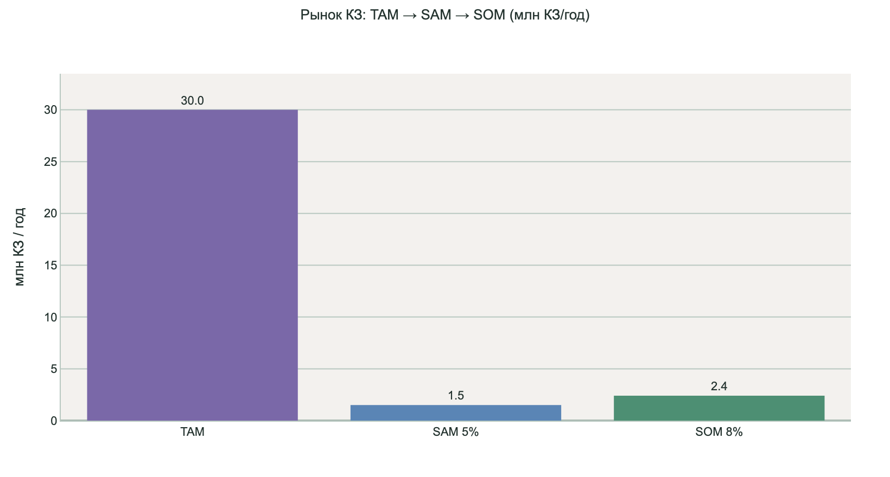
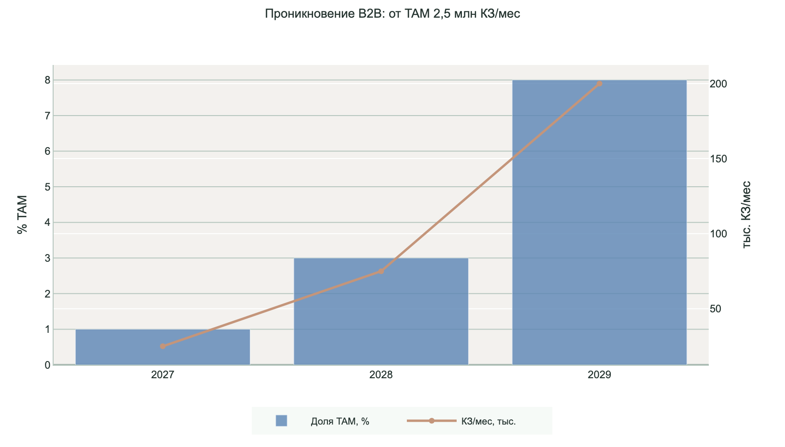
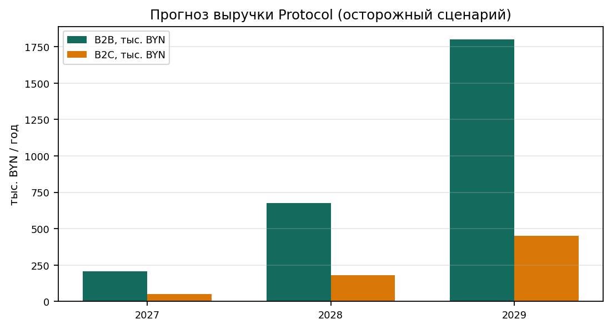
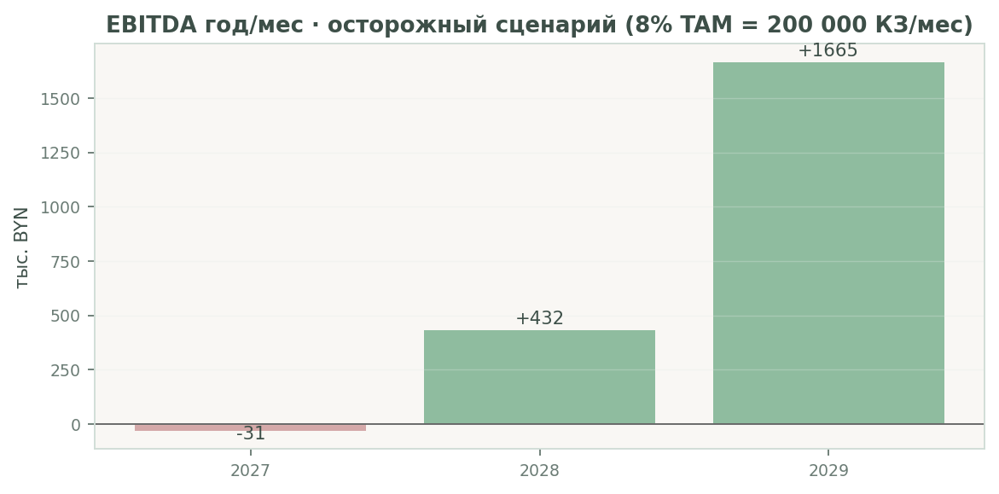
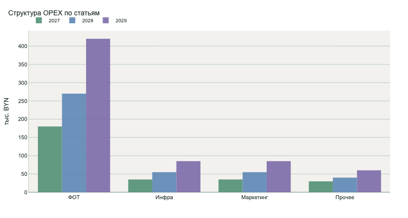
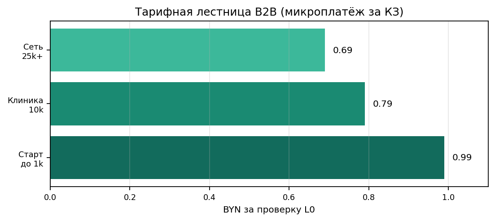
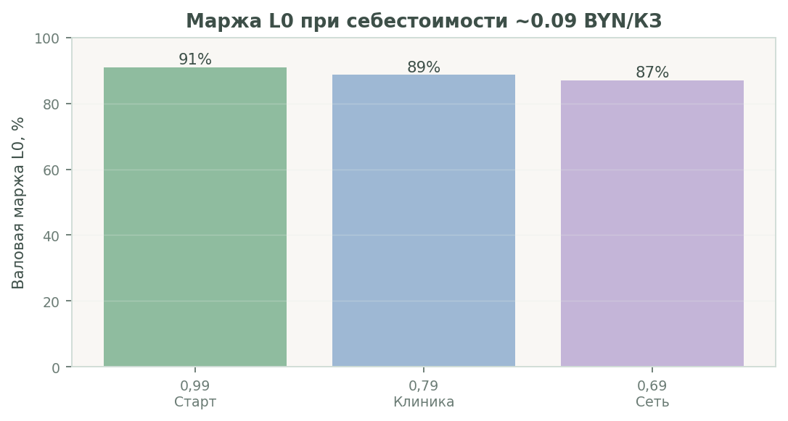
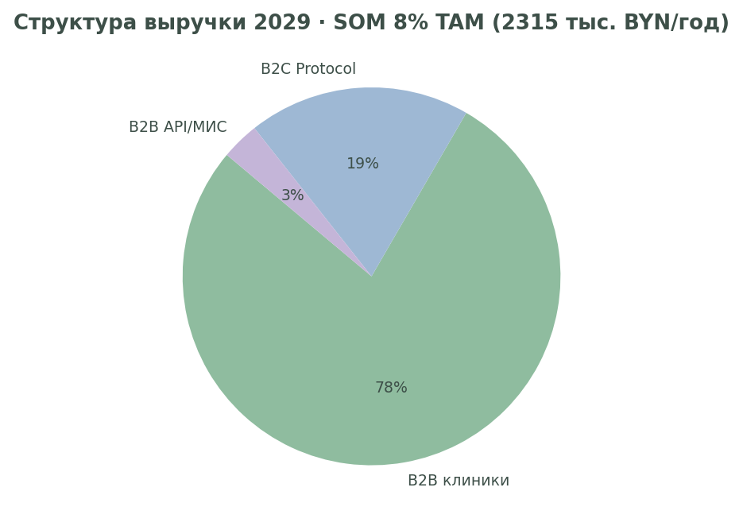
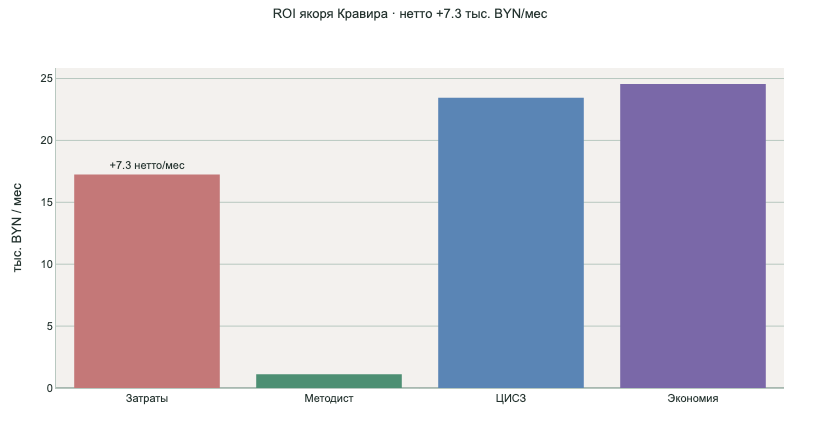
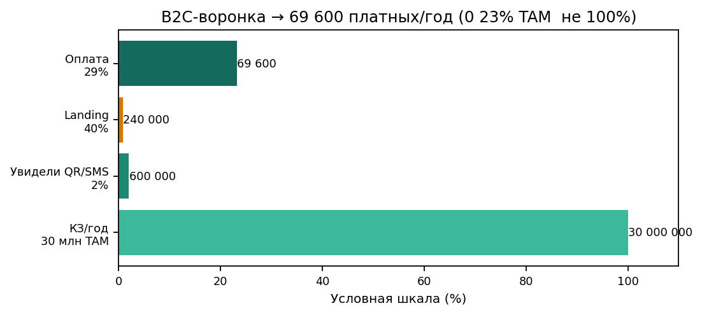

Сделать качество амбулаторной помощи в Беларуси измеримым и прозрачным - для каждого консультативного заключения, до подписи врачом и до попадания данных в ЦИСЗ. Не заменяя врача и МЭЭ, мы даём инструмент соответствия 478 клиническим протоколам Минздрава на потоке 100% КЗ, а пациенту - право проверить своё заключение по тем же стандартам.
Рынок платных медуслуг РБ в 2025 г. - около 2,7 млрд BYN (+24% г/г, оценка Юнитер). Частный сектор - 70-81% платного сегмента (КОЛЛIЕРЗ / SmartPress); в Минске концентрируется ~56% объёма. Рост частных центров ~20%/год. Очереди и дефицит методистов в госсекторе перекладывают спрос на платную амбулаторию. При 25 000 КЗ/мес в МЦ «Кравира» как 1% рынка адресуемый поток частных ОЗ - ~2,5 млн КЗ/мес (30 млн/год). Protocol монетизирует контроль качества на этом потоке, не конкурируя с лечением, а повышая его соответствие стандартам.
Централизованная информационная система здравоохранения (ЦИСЗ) создаёт единое информационное пространство системы здравоохранения РБ (распоряжение Президента №6рп от 08.01.2024). Цели: улучшение качества медуслуг и управляемость отрасли. Частные организации здравоохранения подключаются к протоколам взаимодействия МИС с ЦИСЗ (v.1.2-1.3, FHIR BY). Protocol закрывает разрыв между «врач написал текст» и «пакет принят государством»: проверка до подписи ЭЦП снижает доработки и повышает достоверность регистров для аналитики Минздрава.
1. Титульный лист .......................................... 1 2. Содержание .............................................. 2 3. Резюме .................................................. 3 4. Описание проекта ........................................ 5 5. Описание продукции ...................................... 9 6. Анализ рынка и маркетинг ................................ 13 7. Интеллектуальная собственность .......................... 18 8. Потребители и сбыт ...................................... 19 9. Ценообразование ......................................... 21 10. Конкуренты ............................................. 24 11. Поставщики .............................................. 26 12. Производственный план .................................. 27 13. Организационный план ................................... 29 14. Риски .................................................. 31 15. Финансовый план ........................................ 32 16. Иные сведения .......................................... 36 Приложения А-Ж: прайс, дорожная карта, KPI, графики, ROI, рынок РБ Электронные приложения: 05_Biznes_plan_Prilozheniya.html, 06_ROI_Kravira.html Рекомендуемый объём: 10-40 страниц основного текста; детальные расчёты - в приложениях.
Идея проекта. Автоматизировать предимпортную экспертизу консультативных заключений (КЗ) до подписи ЭЦП в частных медицинских организациях Республики Беларусь и предоставить физическим лицам сервис самопроверки качества оказанной помощи по официальным клиническим протоколам Минздрава.
Проблема и возможность. В РБ действует порядка 478 клинических протоколов; рынок платных медуслуг оценивается в ~2,7 млрд BYN в 2025 г. (+24% г/г). Доля частного сектора в платном сегменте - 70-81%. МЦ «Кравира» формирует 25 000 КЗ/мес - по оценке участника это ~1% платных консультаций частного сектора, откуда адресуемый рынок ~2,5 млн КЗ/мес (30 млн/год). Методслужба не успевает проверять каждое заключение; отклонения пакетов в ЦИСЗ создают репутационные и финансовые риски.
Решение. Программный комплекс Protocol: детерминированный scoring (482+ правил, 8 блоков), чек-лист готовности к ЦИСЗ (FHIR BY), единое решение send_gate для МИС. LLM - только пояснения; блокировка подписи - по правилам.
Монетизация (три канала). B2B: 0,99 / 0,79 / 0,69 BYN за проверку L0 (якорь Кравира - 207 тыс. BYN/год). B2B API: лицензия МИС «Айболит». B2C: 4,99 / 9,99 BYN для физлиц.
Финансовый вывод. Год 3: выручка ~2,33 млн BYN, EBITDA +1,68 млн при 8% рынка (200 000 КЗ/мес). Точка безубыточности направления - 2-3 клиники уровня «Клиника» или OEM API.
Запрос. Сертификат ГКНТ (571 б.в., ~24 тыс. BYN) на интеграцию МИС, on-prem L0, масштабирование на 5-10 частных ОЗ к 2028 г.
CDSS (Clinical Decision Support) существуют более 40 лет (AHRQ/ONC); >90% больниц США используют EHR с CDS. Зарубежные решения не закрывают связку «КП конкретной страны + предподпись ЭЦП + FHIR + B2C для пациента» для Беларуси.
| Решение | Регион | Тип | Почему не заменяет Protocol |
|---|---|---|---|
| UpToDate / DynaMed | США, глобально | CDSS, справочник + рекомендации | Справочник для врача, не проверка каждого КЗ |
| Isabel / DXplain | Великобритания | Дифференциальная диагностика | Диагностика, не compliance КЗ |
| Epic / Cerner CDS hooks | США | Встроенные правила в EHR | Инфраструктура EHR, не КП государства |
| Infera / Zebra Medical | Израиль / глобально | AI-CDSS по guidelines | AI без evidence_map по КП РБ |
| MedAware / BD Medication | Израиль / США | Безопасность назначений | Pharmacovigilance, не полный КЗ |
| OpenAI / ChatGPT (ad hoc) | Глобально | Свободный LLM-чат | Не медицинский продукт |
| Protocol (МЦ «Кравира») | Беларусь | Предпроверка КЗ + ЦИСЗ + B2C | Единственный контур «КП РБ + ЭЦП + FHIR BY + пациент» |
Ситуация в отрасли. Цифровизация здравоохранения Республики Беларусь ускорилась с внедрением Централизованной информационной системы здравоохранения (ЦИСЗ) и профиля FHIR BY 5.0. Частные амбулаторно-поликлинические организации обязаны формировать консультативные заключения (КЗ) по стандартам и передавать структурированные данные в государственный контур. В системе здравоохранения РБ действуют 1 394 амбулаторно-поликлинические организации; платный сегмент концентрируется в частных центрах, преимущественно в Минске (~56% объёма).
Макроэкономика платной медицины. По отраслевым оценкам, рынок платных медуслуг РБ в 2025 г. составил ~2,7 млрд BYN при росте ~24% к предыдущему году. Доля частного сектора в платных услугах - 70-81% (данные КОЛЛIЕРЗ / SmartPress). Рост выручки частных центров в Минске - около 20% в год (2018-2023). Это создаёт устойчивый поток КЗ, который невозможно контролировать вручную на каждом этапе.
Существующая проблема: (1) методслужба не масштабируется на поток 25 000+ КЗ/мес в крупной клинике; (2) отклонения пакетов в ЦИСЗ влекут доработки и репутационные риски; (3) пациенты не имеют инструмента проверки соответствия оказанной помощи протоколам; (4) врач не может оперативно сверять каждое заключение с полным корпусом из ~478 клинических протоколов Минздрава.
Цель проекта: коммерциализация Protocol как B2B-сервиса для клиник и B2C-сервиса для физических лиц на национальном рынке РБ.
Задачи на 2026-2028: пилот и production L0 в МЦ «Кравира»; интеграция API в МИС «Айболит»; запуск B2C-витрины с оплатой; подключение 3-10 B2B-клиентов; регистрация программы для ЭВМ в НЦИС; достижение 3% рынка к 2028 г. и 8% к 2029 г.
Ожидаемый эффект для отрасли: снижение доли отклонённых пакетов ЦИСЗ, повышение прозрачности качества помощи для пациентов, высвобождение 0,3-0,5 FTE методиста на крупную клинику.
Социальная значимость (подробно - раздел «Социальная значимость» в PDF-версии бизнес-плана): - Пациенты получают B2C-инструмент проверки КЗ по 478 протоколам Минздрава с цитатами из стандарта. - Врачи - подсказку L0 <2 с до ЭЦП, без «чёрного ящика» LLM в решении send_gate. - Медцентры - 100% охват потока вместо 2-5% выборочного аудита; единый контур клиника + ЦИСЗ. - Государство - более качественные данные в ЦИСЗ и исполнение клинических протоколов на амбулаторном уровне.
Наименование продукции: программный комплекс Protocol (SaaS / on-prem) - информационная система поддержки контроля качества медицинской документации. Позиционирование: не медизделие, не замена врача и МЭЭ, не юридическое заключение для B2C.
Отличия от аналогов на рынке: - корпус ~478 PDF клинических протоколов Минздрава РБ с цитатами в отчёте (evidence_map); - детерминированный scoring (8 блоков, 482+ правил, gate_score, soft_gate); - два контура в одном send_gate: клинические протоколы + готовность ЦИСЗ (FHIR BY 3.2.1); - tiering L0/L1/L2: массовая проверка <2 с без LLM (L0) для каждого КЗ в МИС; - единый REST API для интеграции с МИС «Айболит» и другими вендорами.
Функции B2B: поиск КП по МКБ-10, cisz_readiness, send_gate (allow / warn / block), REST API L0-L2, отчёт для методслужбы с цитатами из протоколов.
Функции B2C: загрузка PDF своего КЗ физлицом; отчёт на русском языке о соответствии помощи протоколам; дисклеймер (не диагноз, не юридическое заключение); удаление файла после сессии.
Технология: Python/FastAPI, гибридный RAG, детерминированные правила; опционально LLM для L2. Развёртывание в защищённом контуре РБ (см. architecture-kravira-fhir-mis.pdf). Серверные требования: 2-4 GB RAM на площадку, Docker.
Жизненный цикл продукта: еженедельная синхронизация корпуса КП Минздрава; ежемесячные релизы правил; квартальный аудит методистом.
Продукты и услуги отрасли: амбулаторная помощь, ведение ЭМК, МИС, передача данных в ЦИСЗ, методический контроль КЗ, медицинский туризм (>160 тыс. иностранных пациентов в 2024 г.).
География: национальный рынок (РБ); приоритет - Минск и крупные частные сети; экспорт в русскоязычные юрисдикции с похожей нормативкой - перспектива 2029+.
B2B-сегмент: частные ОЗ. МЦ «Кравира» - 25 000 КЗ/мес, ~1% рынка частных ОЗ, отсюда оценка сегмента ~2,5 млн КЗ/мес (~30 млн/год). SAM (5% TAM, клиники с потоком >5 000 КЗ/мес и готовностью к ЦИСЗ) - 1,5 млн КЗ/год. SOM год 3 - 2,4 млн КЗ/год (8% TAM).
B2C-сегмент: получатели КЗ в частных ОЗ (~30 млн касаний/год). При конверсии 0,1% - 30 000 платных проверок × 4,99 BYN ≈ 150 тыс. BYN/год; при 0,5% - 750 тыс. BYN/год дополнительно к B2B. Воронка: QR на чеке → landing → оплата ERIP.
Маркетинг B2B: кейс Кравиры с ROI (экономия методиста + снижение доработок ЦИСЗ); конференции ЦИСЗ/Минздрава; прямые продажи; партнёрство с EPAM/Айболит (OEM API); пилот 1-3 месяца с KPI.
Маркетинг B2C: QR «Проверить заключение»; SEO «как читать КЗ»; соцсети; white-label от клиник-партнёров (промо 2,99 BYN).
Тренды: ужесточение требований ЦИСЗ; дефицит методистов; принятие ИИ при прозрачном детерминированном scoring; рост частных центров ~20%/год в Минске.
Детальная таблица рынка TAM/SAM/SOM, контекст РБ и графики - таблицы 1-1а, 9 и приложения.
Используются объекты ИС участника. Исходный код и база правил - исключительные права МЦ «Кравира» (договоры с разработчиками). Регистрация программы для ЭВМ в НЦИС (БелГИСС). Режим коммерческой тайны для каталога правил и конфигураций gate. Патентная чистота: открытые PDF Минздрава, FHIR BY, собственная реализация scoring и send_gate. Лицензирование B2B - договор оказания услуг / лицензионный договор на API.
Основные потребители B2B: частные медицинские центры и сети ОЗ; методслужбы; вендоры МИС (Айболит/EPAM). Якорный потребитель - МЦ «Кравира» (~25 000 КЗ/мес, 207 тыс. BYN/год B2B).
Сегментация B2B: (1) крупные сети 25k+ КЗ/мес - тариф «Сеть» 0,69 BYN; (2) клиники 5-10k - «Клиника» 0,79 BYN; (3) малые ОЗ до 1k - «Старт» 0,99 BYN; (4) OEM через МИС - лицензия + внедрение.
Потребители B2C: физические лица - пациенты частных клиник, желающие проверить своё консультативное заключение на соответствие клиническим протоколам Минздрава; вторичный сегмент - родственники пациентов и медтуристы.
Сбытовая политика B2B: прямые договоры; пакетные тарифы; OEM/API для МИС; пилот 1-3 месяца с метриками отказов ЦИСЗ; минимальные обязательства по объёму для скидки.
Сбытовая политика B2C: публичная веб-витрина; ERIP и банковские карты; промо через клиники-партнёры (white-label, скидка 2,99 BYN); QR-код на выдаваемом пациенту КЗ.
Каналы продвижения: личные продажи (B2B), партнёрская программа с клиниками (rev-share на B2C), контент-маркетинг, участие в конкурсе Белинфонд для PR.
Ценовая политика основана на микроплатеже за одну проверку КЗ (модель pay-per-use), что снижает барьер входа для клиник по сравнению с крупными лицензиями МИС.
B2B (за 1 проверку КЗ, уровень L0): - Розница: 0,99 BYN - Пакет 10 000/мес: 0,79 BYN (мин. 5 000 BYN/мес) - Пакет 25 000+/мес: 0,69 BYN (мин. 12 000 BYN/мес, тариф МЦ «Кравира») - L2 для методиста: +0,50 BYN - Внедрение API в МИС: 15-40 тыс. BYN разово + поддержка 3-5 тыс. BYN/год
B2C (физические лица): - Базовая проверка L1: 4,99 BYN - Подробный отчёт L2: 9,99 BYN - Абонемент 3 проверки/мес: 12,99 BYN - Промо от клиники-партнёра: 2,99 BYN
Себестоимость L0 B2B: ~0,06-0,12 BYN/КЗ (маржа 85-94% при 0,99 BYN; 83-91% при 0,69 BYN). Себестоимость B2C L1: ~0,15-0,25 BYN (обработка PDF, без долгого хранения ПДн).
Обоснование цены: ручной аудит методистом - эквивалент ~34 BYN/проверенное КЗ при охвате 2-5% потока; Protocol L0 - 0,69 BYN при 100% охвате.
Прайс-листы, таблица себестоимости, маржа по тарифам и график тарифной лестницы - таблицы 2-4, 9 и приложение А.
Конкурентный анализ показывает отсутствие в Республике Беларусь готового продукта «корпус КП Минздрава + предпроверка Bundle до ЭЦП + B2C для пациентов».
Основные альтернативы: ручной аудит методслужбы (2-5% потока, ~34 BYN/КЗ); зарубежные CDSS без КП РБ; свободные LLM-чаты (риск ПДн, нет send_gate); встроенные шаблоны МИС без evidence_map.
Конкурентные преимущества Protocol: 100% охват потока L0; локальный корпус КП; интеграция ЦИСЗ; прозрачный детерминированный scoring; три канала монетизации.
Подробная сравнительная таблица с оценкой по 5 критериям - таблица 5.
Поставщики и контрагенты: - хостинг / виртуальные машины в дата-центре РБ (on-prem площадка клиники или облако РБ); - платёжные агрегаторы для B2C (ERIP, эквайринг банков РБ); - опционально API языковой модели (Gemini) или on-prem LLM для уровня L2; - НЦИС (БелГИСС) - регистрация программы для ЭВМ; - EPAM / вендор МИС «Айболит» - интеграционные работы; - юридическое сопровождение договоров B2B/B2C и политики ПДн.
Материалы: не требуются (программный продукт). Сервер 2-4 GB RAM на площадку. Лицензии ПО - open source (Python, FastAPI) + собственная разработка.
План закупок на 2026-2027: серверное оборудование ~10 тыс. BYN; интеграция МИС ~40 тыс. BYN; маркетинг пилота ~20 тыс. BYN (см. таблицу инвестиций).
Производственный процесс - тиражирование экземпляров ПО и сопровождение: 1. Развёртывание Docker/on-prem на площадке заказчика (1-2 недели). 2. Еженедельная синхронизация корпуса PDF Минздрава. 3. Обновление каталога правил и конфигураций gate (релизы). 4. Для B2C - изолированный публичный контур с удалением загруженных файлов после сессии. 5. Мониторинг SLA L0 <2 с, uptime 99,5%.
Материально-техническая база: серверная инфраструктура МЦ «Кравира»; рабочий прототип развёрнут. Потребность в новом оборудовании - умеренная (1 сервер на площадку, ~3-5 тыс. BYN).
Производственная мощность: один сервер L0 обрабатывает до 500 000 КЗ/мес; масштабирование горизонтальное.
Организация-исполнитель: ОДО «Медицинский центр «Кравира»». Кадровая структура проекта - таблица 6.
График работ (ключевые вехи): - Q3-Q4 2026: production L0 on-prem, подготовка B2C beta, регистрация ПО; - Q1-Q2 2027: API в МИС «Айболит», метрики пилота, ROI-отчёт; - Q3-Q4 2027: коммерческие договоры с 2-3 внешними ОЗ, B2C ERIP; - 2028: масштабирование на 5-10 клиник, 3% рынка; - 2029: 8% рынка, white-label МИС.
Ответственный по проекту: Кузавка П.Л. (цифровая трансформация и ИТ). Методологическое руководство: главврач / методслужба Кравиры.
ФОТ проекта (оценка): ~180 тыс. BYN в год 1, рост до 420 тыс. BYN в год 3 (см. таблицу OPEX).
Финансовые и иные риски проекта систематизированы в таблице 7.
Ключевые риски: обработка ПДн в B2C; изменение клинических протоколов Минздрава; низкая готовность платить малыми клиниками; регуляторная квалификация продукта; задержка интеграции МИС; конкуренция со стороны вендоров МИС.
Митигация: on-prem L0 без выноса ПДн; автосинхронизация корпуса КП; ROI через снижение отказов ЦИСЗ (см. 06_ROI_Kravira.html); позиционирование как СПО/ИС; пилот с EPAM; QR-кампании для B2C через партнёрские клиники; резерв на юридическое сопровождение 30 тыс. BYN.
Страховые меры: договоры SLA с клиентами B2B; политика обработки ПДн; регистрация ПО в НЦИС.
Финансовый план на 3 года (осторожный сценарий) представлен в таблицах 8, 10-12 и на графиках в приложениях Г, З, И.
Исходное допущение рынка: 25 000 КЗ/мес в Кравире = 1% платных КЗ частного сектора РБ, адресуемый рынок 2,5 млн КЗ/мес (30 млн/год).
Доходы год 1 (2027): B2B Кравира 207 тыс. + B2C beta 50 тыс. = 257 тыс. BYN; OPEX 280 тыс.; EBITDA -23 тыс. (инвестиционная фаза).
Доходы год 2 (2028): B2B 675 + B2C 180 + API 25 = 880 тыс. BYN; OPEX 420 тыс.; EBITDA +460 тыс. (3% рынка, 75 000 КЗ/мес).
Доходы год 3 (2029): B2B 1 800 + B2C 450 + API 75 = 2 325 тыс. BYN; OPEX 650 тыс.; EBITDA +1 675 тыс. (8% рынка, 200 000 КЗ/мес).
Структура OPEX: ФОТ 64%, инфраструктура 13%, маркетинг 13%, прочее 10% (см. таблицу 11 и график OPEX).
Инвестиции 2026-2027: интеграция МИС 40 тыс.; B2C-витрина 25 тыс.; регистрация ПО 15 тыс.; сервер 10 тыс.; маркетинг 20 тыс. Итого ~110 тыс. BYN. Источники: сертификат ГКНТ (571 б.в. × 42 BYN ≈ 24 тыс. BYN), собственные средства Кравиры, reinvest EBITDA с 2028 г.
ROI якорного клиента - приложение Ж (06_ROI_Kravira.html): экономия ~3,5 тыс. BYN/мес vs затраты 17,25 тыс. BYN/мес на Protocol при полном охвате - окупаемость через снижение доработок ЦИСЗ и высвобождение методиста.
Cash flow: отрицательный в 2027 (-23 тыс. EBITDA), положительный с 2028 (+460 тыс., +1 675 тыс.).
Иные сведения: бизнес-план дополнен приложениями А-Ж в соответствии с рекомендациями Белинфонда (объём 10-40 страниц, расчёты в приложениях).
Электронная версия приложений: 05_Biznes_plan_Prilozheniya.html (графики Chart.js, таблицы рынка РБ, P&L, cash flow), ROI: 06_ROI_Kravira.html, чек-лист: docx-preprint-checklist.md.
Архитектура: architecture-kravira-fhir-mis.pdf. Презентация MVP: mvp-presentation.html.
Источники рыночных данных: отраслевые обзоры платной медицины РБ (Uniter, SmartPress, КОЛЛIЕРЗ); данные Минздрава РБ; внутренние метрики МЦ «Кравира» (25 000 КЗ/мес).
Контакт для уточнений: Кузавка П.Л., akuazuk@gmail.com, +375 29 608-75-95.
| Показатель рынка РБ | Значение | Источник |
|---|---|---|
| Рынок платных медуслуг РБ, 2025 (оценка) | ~2,7 млрд BYN | отраслевые обзоры |
| Доля частных центров в платном сегменте | ~70-81% | КОЛЛIЕРЗ / SmartPress |
| Доля Минска в платных услугах | ~56% | концентрация спроса |
| Амбулаторно-поликлинические ОЗ в РБ | 1 394 | Минздрав РБ |
| Рост выручки частных центров (Минск) | ~20% / год | SmartPress, 2018-2023 |
| Иностранные пациенты, 2024 | >160 тыс. | НАТУР / медтуризм |
| Показатель | Значение | Комментарий |
|---|---|---|
| КЗ/мес, Кравира | 25 000 | 1% рынка |
| КЗ/мес, частные ОЗ РБ | 2 500 000 | экстраполяция |
| TAM @ 0,99 BYN/год | ~29 700 000 BYN | 30 млн × 0,99 |
| SAM 5% | 1 500 000 КЗ/год | крупные ОЗ |
| SOM год 3 | 2 400 000 КЗ/год | 8% TAM |
| Показатель | 2027 | 2028 | 2029 |
|---|---|---|---|
| Клиенты (ОЗ) | 1 | 3 | 8 |
| КЗ/мес | 25 000 | 75 000 | 200 000 |
| Выручка B2B, тыс. | 207 | 675 | 1800 |
| Выручка B2C, тыс. | 50 | 180 | 450 |
| Выручка API, тыс. | 0 | 25 | 75 |
| OPEX, тыс. | 280 | 420 | 650 |
| EBITDA, тыс. | -23 | +460 | +1675 |
| Статья инвестиций | BYN | Срок |
|---|---|---|
| Интеграция API в МИС «Айболит» | 40 000 | Q3 2026 - Q1 2027 |
| B2C-витрина, ERIP, политика ПДн | 25 000 | Q4 2026 |
| Регистрация программы для ЭВМ (НЦИС) | 15 000 | Q3 2026 |
| Серверная инфраструктура якоря | 10 000 | Q4 2026 |
| Маркетинг пилота (кейс Кравира) | 20 000 | 2027 |
| Драйвер | Пояснение |
|---|---|
| Обязательная передача амбулаторных данных в ЦИСЗ (FHIR BY) | Рост штрафных и репутационных рисков |
| Отклонение пакетов при ошибках Bundle/Composition/НСИ | Доработки после подписи ЭЦП |
| Дефицит методистов при росте потока КЗ | Ручной аудит 2-5% потока |
| 478 клинических протоколов Минздрава | Невозможность ручного контроля каждого КЗ |
| Альтернатива | Охват | Слабость | Стоимость |
|---|---|---|---|
| Ручной аудит методслужбы | 2-5% потока | Не масштабируется | 34 BYN/проверенное КЗ |
| Зарубежные CDSS (UpToDate и др.) | N/A | Нет КП Минздрава РБ | Подписка USD |
| ChatGPT / общие LLM | Ad hoc | Нет send_gate, ПДн | Непредсказуемо |
| Шаблоны МИС | 100% форма | Нет evidence_map | В лицензии МИС |
| Protocol L0 | 100% потока | КП РБ + ЦИСЗ + правила | 0,69 BYN/КЗ |









